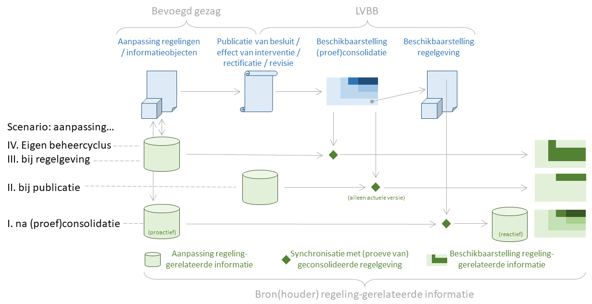

Synchronisatie van regelgeving-gerelateerde informatie
Het eindresultaat van het geïntegreerd proces van bekendmaken en consolideren is een overzicht van alle op een bepaald moment geldende versies van de geconsolideerde regelgeving. Daarnaast kunnen er proefconsolidaties gemaakt worden van nog niet in werking getreden regelgeving die gebaseerd zijn op de best beschikbare kennis, waarvan soms al bekend is dat ze niet zonder aanvullende wijzigingen in werking kunnen treden.
Regelgeving-gerelateerde informatie kan op verschillende manieren synchroon gehouden worden met de (juridische) inhoud van geconsolideerde regelgeving of met de proefconsolidaties gecombineerd worden. Welke manier gekozen wordt hangt af van het proces waarop de regelgeving-gerelateerde informatie tot stand komt, en welke eisen er aan dat proces en de uitkomst ervan gesteld worden. Om een idee te geven van de mogelijkheden worden vier scenario's besproken, waarbij het onderhouden van de regelgeving-gerelateerde informatie in toenemende mate ontkoppeld is van het besluitvormingsproces.
De scenario's worden gekarakteriseerd door het moment van aanpassing van de regelgeving-gerelateerde informatie:

- I. Na (proef)consolidatie
In reactieve vorm wordt de regelgeving-gerelateerde informatie aangepast na de beschikbaarstelling van de geconsolideerde regelgeving of proefconsolidaties daarvan. Bij elke verandering van (de inhoud van) de geconsolideerde regelgeving dient nagegaan te worden of en hoe de regelgeving-gerelateerde informatie aangepast dient te worden. Dit scenario kan toegepast worden als er geen voorkennis aanwezig is over nieuwe regelgeving die bij het bevoegd gezag in voorbereiding is, of als het aanpassen van de regelgeving-gerelateerde informatie geen urgentie heeft. Dit scenario kan ook proactief worden toegepast als aanpassing van de regelgeving en de gerelateerde informatie vrijwel altijd samengaat.
- II. Proactief, bij publicatie van een besluit of bericht dat leidt tot nieuwe regelgeving
Er is voorkennis welke besluiten of andere berichten het bevoegd gezag op korte termijn naar de LVBB gaat sturen, wat de inhoud van die berichten is en hoe dat doorwerkt in de consolidatie van regelgeving. De regelgeving-gerelateerde informatie heeft alleen betrekking op de geldende regelgeving en niet op regelgeving die nog niet in werking is getreden of die niet meer geldig is. Kort voordat een besluit of ander bericht aan de LVBB wordt gestuurd wordt de regelgeving-gerelateerde informatie aangepast; de synchronisatie zorgt ervoor dat die informatie pas gebruikt wordt als ook de geldende geconsolideerde regelgeving via de LVBB zichtbaar is geworden.
- III. Proactief, met regelgeving
Het aanpassen van de regelgeving-gerelateerde informatie gebeurt in samenhang met het opstellen van de regelgeving. De synchronisatie zorgt ervoor dat de juiste versie van de regelgeving-gerelateerde informatie bij een (proef)consolidatie van regelgeving gevonden kan worden, ook als het gaat om regelgeving die niet meer geldig is. Procesmatig (of in de software van het bevoegd gezag) moet geregeld zijn dat bij aanpassing van de (juridische) inhoud van de regelgeving in het besluit ook (indien nodig) de regelgeving-gerelateerde informatie wordt aangepast. STOP gebruikt dit mechanisme voor het bepalen van de inhoud van de geconsolideerde regelgeving.
- IV. Proactief, eigen beheercyclus
Het aanpassen van de regelgeving-gerelateerde informatie gebeurt in samenhang met het opstellen van de regelgeving. De synchronisatie zorgt ervoor dat de regelgeving-gerelateerde informatie en een (proef)consolidatie van regelgeving op dezelfde momenten in werking treden en dat de start en einde van de regelgeving-gerelateerde informatie gelijk is aan die van de nieuwe regelgeving. Procesmatig (of in de software van het bevoegd gezag) moet geregeld zijn dat bij aanpassing van de (juridische) inhoud van de regelgeving in het besluit ook (indien nodig) de regelgeving-gerelateerde informatie wordt aangepast. Dat is in het bijzonder het geval als in het consolidatieproces problemen geconstateerd worden en daarvoor een (juridisch) nieuwe inhoud wordt uitgewisseld.
In een voorbeeld is uitgewerkt hoe de methoden uitwerken voor dezelfde reeks besluiten en berichten.